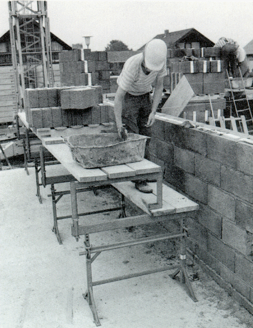
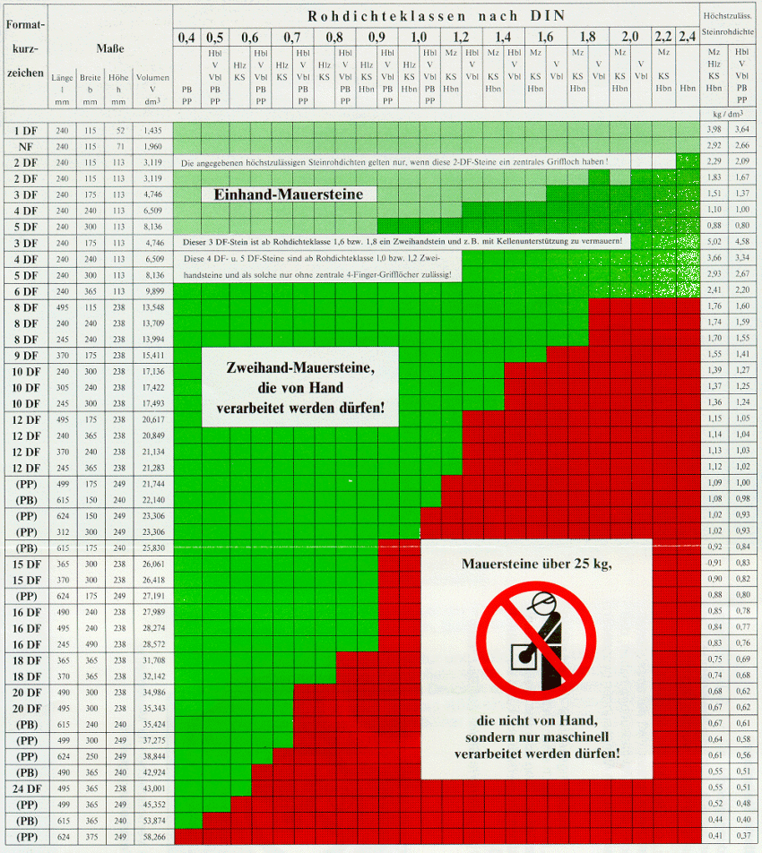

Zum Verarbeiten von Mauersteinen sollten Maßnahmen getroffen werden, die dem Maurer unnötiges Bücken ersparen. Zu diesem Zweck können in der Höhe - möglichst stufenlos - verstellbare und verfahrbare Arbeitsplätze (Gerüste) verwendet werden. Eine höhere Ebene für Steine, Steinpakete und Mörtel und eine tiefere Ebene als Standfläche für den Maurer verbessern die Arbeitsbedingungen (siehe Bild 15).

Tabelle 3: Beispiele für Mauersteine, die von Hand bzw. die nicht von Hand verarbeitet werden dürfen

Erläuterungen
Die Mauerstein-Bezeichnungen einschließlich der Rohdichteklassen sind auf dem Lieferschein angegeben und auch aus den Beipackzetteln der Steinpakete ersichtlich.
Stein-Rohdichte ist die Masse des bei einer Temperatur von 105 °C bis zur Massenkonstanz getrockneten Mauersteins, bezogen auf dessen äußeres Steinvolumen. Dieses errechnet sich aus den äußeren Steinabmessungen Länge x Breite x Höhe.
Es schließt vorhandene Lochkanäle, Grifflöcher, Mörteltaschen und dergl. ein.
| Mz | = | Mauerziegel, Vollziegel u. Hochlochziegel nach DIN 105, Teil 1 |
| Hlz | = | Mauerziegel, Leichthochlochziegel nach DIN 105, Teil 2 |
| KS | = | Kalksandsteine, Voll-, Loch-, Block-, Hohlblock- und Plansteine nach DIN 106, Teil 1 |
| Hbl | = | Hohlblöcke aus Leichtbeton nach DIN 18 151 |
| V u. Vbl | = | Vollsteine und Vollblöcke aus Leichtbeton nach DIN 18 152 |
| Hbn | = | Mauersteine aus Beton, (Normalbeton) nach DIN 18 153 (Hohlblöcke) |
| PB u. PP | = | Porenbeton-Blocksteine (PB) und
Porenbeton-Plansteine (PP) nach DIN 4165 (Porenbeton = früher "Gasbeton") |